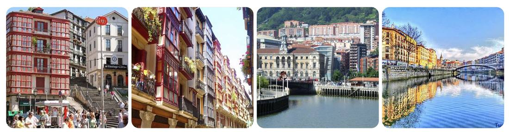
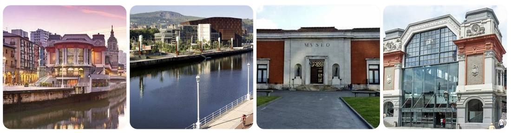
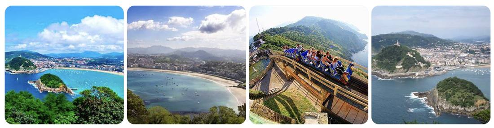
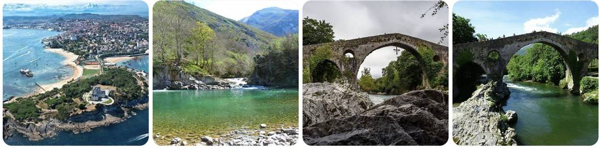
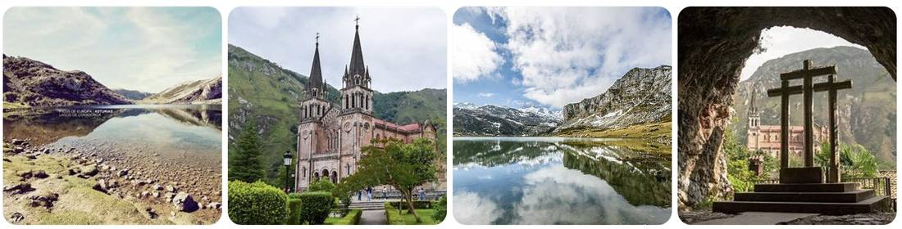
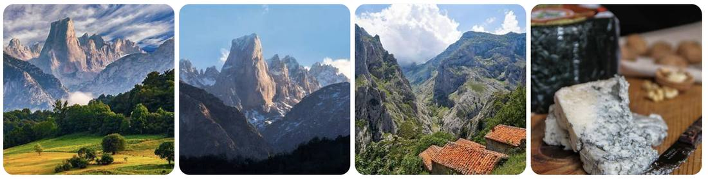
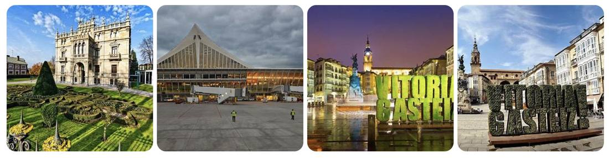

Даты: 1–10 мая 2025
Формат: road trip на троих
✈️ Перелёты и проживание
- 1 мая: Прилет в Бильбао в 15:30
- 10 мая: Вылет из Бильбао в 16:20
🏨 Отели:
- 1–4 мая — Casual Blue (3 ночи)
- 4–8 мая — Vista Montaña, Cangas de Onís (4 ночи)
- 8–10 мая — Apartamentos Maile, Potes (2 ночи)
📅 Маршрут по дням
1 мая — Бильбао
- Прибытие в 14:10
- Прогулка по старому городу (Каско-Вьехо), набережной Нервьон
- Музей Гуггенхайма
- Ужин с pintxos
-
💡Лайфхак
В аэропорту купить Barik карту, стоит 3 евро, закинуть на нее 10 евро, она многочеловечная и многодневная, использовать можно в Бильбао и Сан-Себостьяне

2 мая — Бильбао (можно посмотреть все в 1-й день)
- Рынок Ла Рибера
- Площадь Эускальдерия
- Музей изобразительных искусств (по желанию)

3 мая — Сан-Себастьян (дневной выезд) - 203 км, 2,5 часа
- Аренда машины
- Парковка Funicular de Igueldo Parking, белые полоски - бесплатно, синие - платно
- гора Игуэльдо, Пляж Ла Конча, старый город
- Возвращение в Бильбао, парковка

4 мая — Бильбао → Сантандер → Кангас-де-Онис - 234 км, 2,5 ч
- Palacio de la Magdalena, нерпы там же
- BNS Street Food: вкусно, вид на море, недорого, стильно
- Заселение, отдых

5 мая — Озёра и базилика Ковадонга - 82 км, 2 ч
- Прогулка у озёр, базилика Ковадонга, святая пещера
-
🚗 Основные парковки:
5 мая парковка возле озер открыта, но, на всякий случай, список дальних:
- P1 – Cangas de Onís (автовокзал): Расположен в центре города Кангас-де-Онис.
- P2 – El Bosque: Находится на маршруте между Кангас-де-Онис и Ковадонгой.
- P3 – Muñigu: Также расположен по пути к Ковадонге.
- P4 – El Repelao: Ближайшая к святилищу Ковадонги парковка, открыта круглый год.
Все эти парковки предлагают шаттл-басы, которые доставляют посетителей к озёрам. Стоимость билета составляет 9 € для взрослых и 3,50 € для детей от 4 до 11 лет. Билеты можно приобрести онлайн или на месте
-
Мирадор-де-Фито (по желанию)

6 мая — Наранхо-де-Бульнес и Бульнес - 118 км, 3,5 ч
- Фуникулёр в Бульнес, прогулка по горам и каменным деревушкам. Дорога к фуникулеру очень красивая среди гор.
- Заезд в Сотрес, сыр Кабралес (по желанию)

7 мая — День отдыха в Кангас-де-Онис - 102 км, 2 ч
- Прогулка по городку (Римский мост, Церковь Santa Cruz, Plaza del Mercado)
- Дорога через пещеру La Cuevona (очень необычно и красивая узкая дорога)
- Пляж Торимбия (вид красивый, спуск к пляжу только пешком)
8 мая — Кангас-де-Онис → Фуэнте-де → Потес - 126 км, 2,5 ч
- Через Аренас-де-Кабралес (сыр)
- Фуникулёр в Фуэнте-де
- Заселение в Потесе, вечерняя прогулка
- Деревня Могодо (по желанию)
9 мая — Миратор дель Томбо и Ущелье Карес - 130 км, 3 ч
- Панорамная точка Томбо
- Трек в ущелье Карес (полностью или частично)
-
Заказать заранее такси в Poncebos
найти где заказать такси
10 мая — Потес → Аэропорт Бильбао - 204 км, 2,5 ч
- Витория-Гастейс (по желанию)
- Вылет в 16:20

🗺️ Маршрут по дням
📊 Бюджет на троих (приблизительно)
- ✈️ Авиабилеты – 129 €
- 🏨 Отели – 1 052 €
- 🚗 Аренда авто – 300 €
- ⛽ Бензин – 165 €
- 🛣 Платные дороги – 30 €
- 🍽 Еда и напитки – 960 €
- 🎟 Развлечения и входные билеты – 255 €